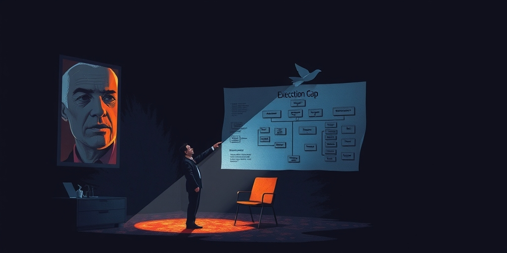
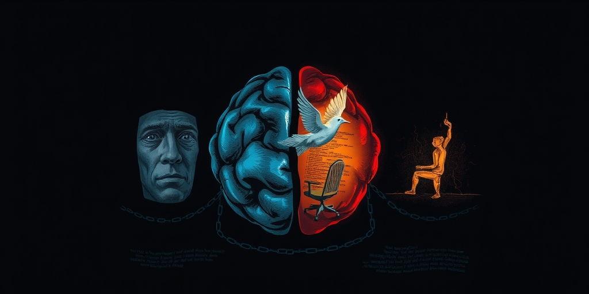
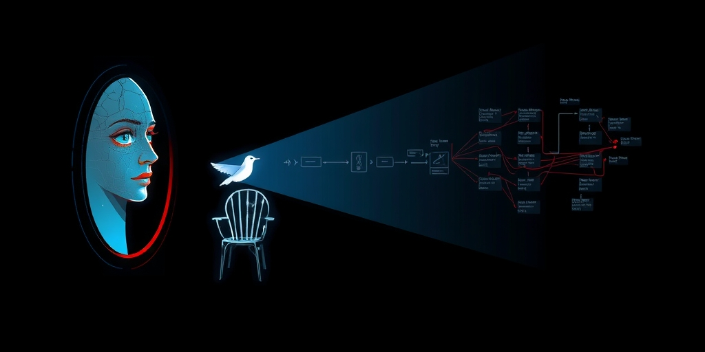

小汪老师的成长洞察 · 属于你的成长专栏
项目经理在复盘会上说“这次延期主要是执行力不够”，没有人能反驳，因为这永远是对的。但如果把同一套流程交给 AI Agent，它一周就跑完了两个月还在拖延的节点，真正的问题才开始浮出水面——不是执行力，是流程设计本身从未被质询过。
任何一个在软件项目里待过三年以上的人，都听过那句咒语：“这次主要是执行力不够。”它出现在延期复盘会上，出现在质量事故的根因分析里，出现在年度绩效面谈的委婉措辞中。它像一块万能补丁，贴在所有裂痕上，让讨论到此为止。
没有人能反驳这句话，因为它在逻辑上永远成立。你永远可以说“如果团队更认真地执行流程，结果会更好”。它把问题归因到了一个无法证伪的方向，同时让流程设计者免于被问责。流程本身有没有问题？不重要。因为问题已经被定义成了“人没有做好”。
这套话语体系背后是一个几十年来从未被挑战的管理假设：流程是对的，人是问题。BPR、六西格玛、CMMI，所有流程管理流派都在教你怎么让人更好地遵守流程，却很少教你怎么判断流程本身是否值得遵守。因为在那个人工执行的年代，你根本分不清问题出在执行还是出在设计。

“逆人性”这个词是理解传统流程管理困境的钥匙。它不是态度问题，而是结构性的三重失败机制。
第一层是认知负荷。流程要求人在高压环境下做出与本能相反的行为。比如“每次代码变更前必须填写变更影响分析表”——工程师在赶 deadline 时的本能是“先改了再说”，不是“先填表”。流程设计者假设人会理性遵守，但实际上人在压力下默认选择阻力最小的路径。这不是态度问题，是神经机制问题。前额叶的理性控制在紧急状态下被边缘系统压制，强制填表相当于要求一个正在逃跑的人停下来做数学题。
第二层是信息不对称。流程的制定者和执行者之间存在巨大的 context gap。制定者不了解执行的实际摩擦成本，执行者不了解流程存在的真正原因。结果是流程逐渐变成一种“没有人真正理解其目的的仪式”。每个人都在走流程，但没有人知道为什么要走，也没有人敢问，因为“问”本身就暴露了自己不守规矩。
第三层是劣币驱逐良币。当一个流程被反复绕过却没有后果时，其他流程的权威性也会被侵蚀。最终组织进入一种“名义上有流程，实际上靠个人判断”的状态。这被归结为“执行力问题”，但这个标签掩盖了一个事实：不是人不执行，是设计出来的流程在被绕过的瞬间已经证明了自己的不适用性。

AI Agent 的特质恰好解决了上述三个问题，而且是结构性的，不是靠“加强管理”这种永远治不了本的方案。
无认知负荷。Agent 不会“嫌麻烦”。你让它在每次代码变更前生成影响分析，它会毫无怨言地做，没有“先改了再说”的冲动。流程的摩擦成本从人的主观体验中消失了——Agent 不存在“压力下的本能反应”。
无信息不对称。Agent 的行为完全由 skill 定义，skill 本身就是流程的可执行规范。制定者写的 skill 就是执行者的行为，没有中间的理解偏差。这意味着“说一套做一套”从技术上被消灭了。过去流程文档存在 Confluence 里，执行靠人的理解；现在 skill 存在 Git 里，执行靠 Agent 的忠实遵循。
无选择性遵守。Agent 要么执行这个 skill，要么不执行，不存在“差不多就行了”的中间状态。流程的权威性不再依赖于人的自觉或管理层的威慑力。你不需要开全员大会强调“这次一定要严格遵守”，因为 Agent 没有“这次就算了”的选项。

这是最反直觉的结果：过去，一个糟糕的流程可能因为“反正也没人严格遵守”而不会造成太大伤害——人的选择性执行实际上充当了“安全气囊”，吸收了烂流程的伤害。但当 Agent 忠实执行一个糟糕的流程时，伤害是 100% 传导的，没有缓冲。
三个具体风险随之浮现。过度流程：每个环节都增加了摩擦但未增加价值，Agent 照样执行，总吞吐量下降。僵化流程：当 context 变了但流程没变，Agent 不会主动适应，它继续执行过时的指令。错误流程：流程本身的逻辑就错了，Agent 不仅执行，还完美地执行了错误，产出系统性的错误结果。
这推动了一个根本性的范式转变：从 Process as Policy 到 Process as Code。Policy 时代，流程是文档，写一次、偶尔更新，反馈循环极慢，年度审计才发现问题。Code 时代，skill 文件就是流程的运行时表达，有版本历史，每次执行都产生数据。流程治理从“文档审批制”变成“代码迭代制”，体现在四个维度：可观测、可实验、可回滚、可归因。
可观测：每次 Agent 执行流程都产生数据——哪一步耗时最长？哪一步被人工审批者驳回最多？哪一步的输出从未被下游引用？流程不再是黑箱。可实验：可以 A/B 测试不同的流程变体，对一半任务用 17 步流程，另一半用 12 步，比较最终交付质量——这在传统流程管理中是不可想象的。可回滚：流程变更就是 skill 变更，走 PR 流程，可以 revert。不像传统流程文档改了就改了，没有回滚机制，也不知道谁改了什么。可归因：当结果不好时，可以精确定位是流程设计问题还是 Agent 执行问题。因为 Agent 执行是确定性的，如果同一个 skill 在不同 context 下产出质量差异大，问题一定在流程设计而非执行。这在传统管理中是不可能做到的——你永远分不清是“流程不对”还是“人没做好”。
这个转变最深的含义，是它把“执行力”这个模糊的管理概念从组织话语中移除了。
过去，当项目失败时，管理层的默认归因是“执行力不够”。这是一个几乎无法证伪的说法，它成了一个万能解释器，同时也让流程设计者免于被问责。但在 AI-SDLC 中，Agent 的执行是完美的（在其能力范围内）。责任链变得清晰：如果 skill 写得不好，那是流程设计者的责任；如果 Agent 能力不足，那是工具或基础设施的责任；如果人工审批环节放水了，那是审批者的责任。“执行力”作为一个归因类别消失了。
这对组织来说既是解放也是威胁。解放的是一线执行者，他们不再被不合理流程绑架，不再背锅。威胁的是流程制定者，他们不能再拿“执行力不够”当挡箭牌，流程设计的质量将被直接放在阳光下。当“执行力”这个词从管理词典里消失，组织里谁最不舒服？不是一线员工，是那些靠“执行力不够”来解释一切的管理者。这是 AI-SDLC 带来的真正地震——不是技术替代人，而是问责制从“底层执行”上移到“顶层设计”。
写给你的话
当 Agent 把执行变成常量，流程设计就变成了唯一的变量。你准备好了吗？不是准备好引入 AI，而是准备好面对一个没有“执行力不够”可用的复盘会。下一次，当项目出问题，你还能把锅甩给谁？如果你的流程设计能力从未被真正检验过，现在阳光要照进来了。
小汪老师的成长洞察 · 属于你的成长专栏